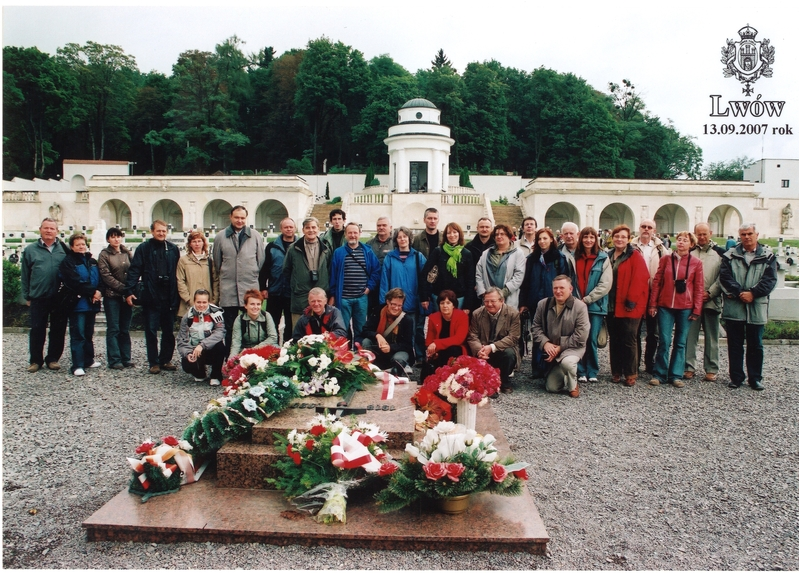

POLSKIE TOWARZYSTWO AKUSTYCZNE
OSA 2007.
Konferencja odbyła się w Hotelu Gromada w Przemyślu w dniach od 10 do 14 września 2007 roku.
Organizacja konferencji
Organizatorem konferencji w 2007 roku był Rzeszowski Oddział Polskiego Towarzystwa Akustycznego.
Przewodnicząca Komitetu Organizacyjnego:
dr hab. inż. Lucyna Leniowska, prof. UR
Przewodniczący Komitetu Naukowego:
prof. Witold Rdzanek
Publikacje naukowe
W konferencji wzięło udział 128 uczestników, którzy nadesłali łącznie 94 artykuły. Wszystkie nadesłane prace zostały zrecenzowane przez dwóch niezależnych recenzentów i po uzyskaniu pozytywnej opinii opublikowane w suplemencie do IV zeszytu czasopisma Archives of Acoustics z 2007 roku.
Fotografia archiwalna
